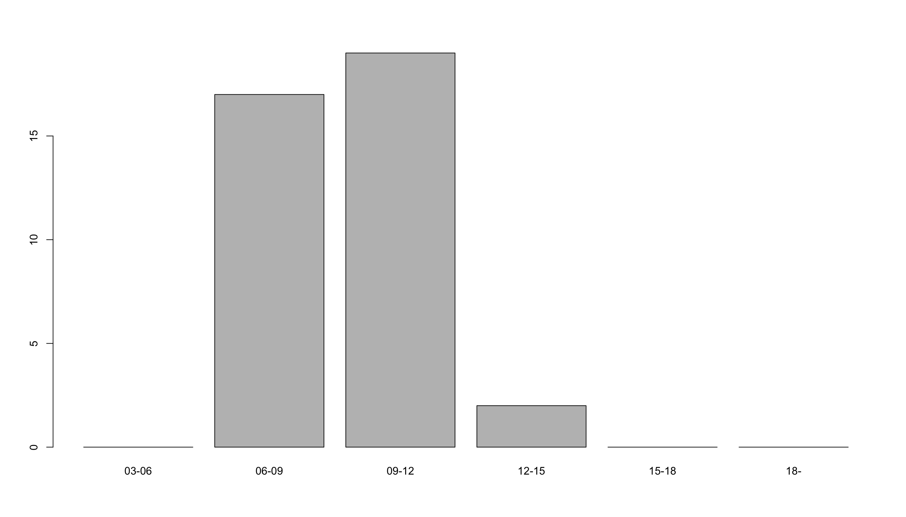
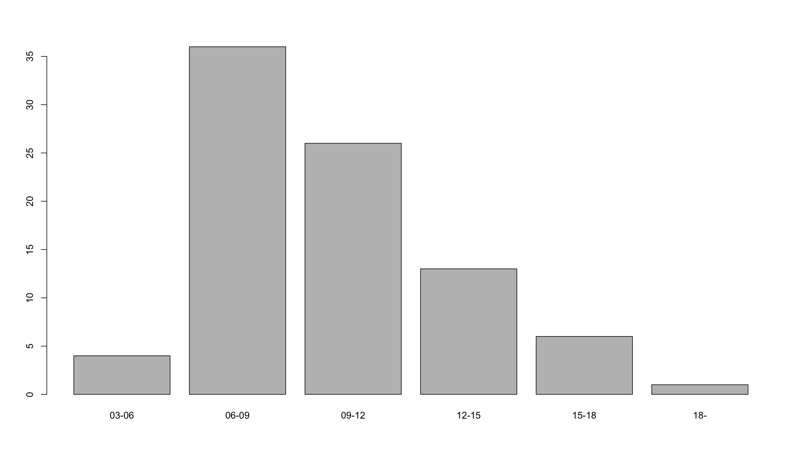
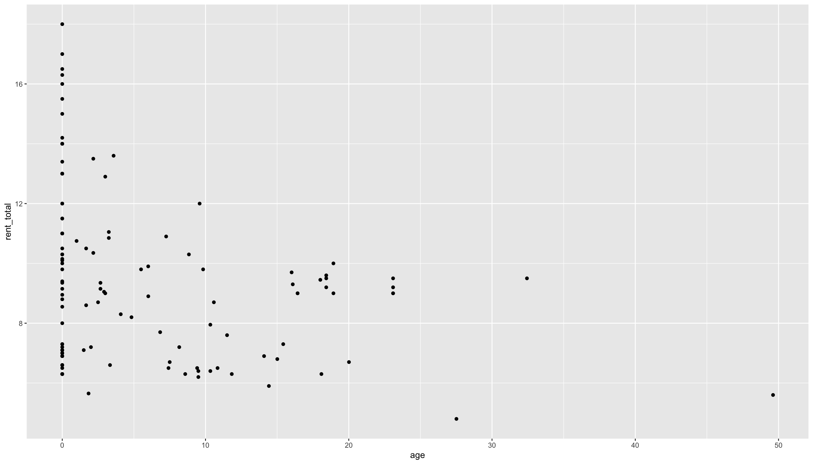

プレゼミ2024
第2回 Rによる統計表の作成
今日の目標
第2回講義の到達目標は、
- データの読み込み
- データの中身を確認
- 特定の変数にアクセス
dplyrでデータ加工
今日使う関数
パッケージとデータの読み込み・書き込み
pacman::p_load(): パッケージを一括読み込みreadr::read_csv(): csvファイルを読み込むreadr::write_csv(): データフレームをcsvファイルとして保存read.csv(): csvファイルを読み込むwrite.csv(): オブジェクトをcsvファイルとして保存
データ操作
dplyr::mutate(): 新しい変数を作るdplyr::filter(): 条件を満たす行だけ抽出dplyr::group_by(): グループ分けを行うdplyr::summarise(): 統計量を計算するcase_when(): カテゴリーを分けるcut(): 連続変数をカテゴリー化する
統計量を計算
sum(): 合計を返すmean(): 平均を返すsd(): 標準偏差を返すsummary(): 記述統計を出力するpsych::describe(): 詳細な記述統計を出力
図表を作る
table()とprop.table(): 度数と割合の表barplot(): 棒グラフを作成するggplot2::ggplot(): キレイなグラフを作成
準備
パッケージの読み込み
一度に複数のパッケージを読み込むには，pacmanパッケージを使うと便利なので，ここではpacmanパッケージを導入して読み込みます。
tidyverseは便利なパッケージ群で必須です。psychは心理学でよく使う機能を提供tableoneは作表に便利なパッケージ
データの場所
- パソコンの分かりやすい場所に
presemi2024というフォルダを作成する。 - その中にデータを保存する
dataフォルダを作成する。 - 著者の
 からデータが入ったzipファイルをダウンロードして解凍する。
からデータが入ったzipファイルをダウンロードして解凍する。 - 中に入っているファイルを,先ほど作成した
dataフォルダに入れる。
 からデータが入ったzipファイルをダウンロードして解凍する。
からデータが入ったzipファイルをダウンロードして解凍する。データを読み込む
readrパッケージのread_csv関数を使ってデータを読み込みます。 read.csv()ではなくread_csv()なので気をつけて。
# A tibble: 6 × 8
rent service floor age auto_lock year walk bus
<dbl> <dbl> <dbl> <dbl> <chr> <dbl> <dbl> <dbl>
1 13.3 0.3 70.5 3.58 No 1996 10 0
2 12.7 0.8 69.7 2.17 No 1996 1 0
3 11 0 63.0 0 Yes 1996 5 5
4 10.7 0.35 67.3 3.25 No 1996 5 15
5 10.5 0.25 55.3 1 No 1996 10 0
6 10.5 0.35 67.3 3.25 No 1996 5 15下準備
dplyrパッケージのmutate()関数で新変数rent_totalとdistを作成します。
クロス表
table()関数でクロス表を作成します。
クロス表に追加要素
クロス表の周辺に要素を追加できます。
行方向の比率
prop.table()関数にmargin = 1を付けると行方向の比率
1996 2004
No 0.3837209 0.6162791
Yes 0.1315789 0.8684211margin = 2は列方向です。指定しないと全体の比率
件数のカウント
sum()は合計値を返す関数です。 引数に条件を指定すると条件に合致するデータの件数を返します。 dataf$bus == 0でバス時間が0のデータを抽出しています。
=ではなく==を使うことに注意してください。
結果表をCSVファイルに出力
write.csv()関数を使って作成した表をcsvファイルとして保存します。
table(dataf$auto_lock, dataf$year) |> # 度数の表
prop.table(margin = 1) |> # 割合の表に変換
print() |> # 出力
write.csv("result.csv") # csvファイルとして保存
1996 2004
No 0.3837209 0.6162791
Yes 0.1315789 0.8684211readrのwrite_csv()関数は，データフレームをcsvファイルとして保存する関数なので，ここでは使いません。
連続変数
連続変数のカテゴリー化
連続変数を特定の区分で分けることをカテゴリー化と言います。 case_when()関数を使ってカテゴリー化します。
dataf <- dataf |>
mutate(
r_category = case_when(
rent_total >= 3 & rent_total < 6 ~ "03-06",
rent_total >= 6 & rent_total < 9 ~ "06-09",
rent_total >= 9 & rent_total < 12 ~ "09-12",
rent_total >= 12 & rent_total < 15 ~ "12-15",
rent_total >= 15 & rent_total < 18 ~ "15-18",
rent_total >= 18 ~ "18-")
)case_when()は遅い
ここではcut()関数を使って，同じカテゴリー変数を作成してみます。
カテゴリー化した変数のクロス表
カテゴリー化した変数の棒グラフ
横軸がカテゴリー変数の場合は，barplot()関数を使って棒グラフを作成します。
1996年のデータに限定して棒グラフ
2004年のデータに限定して棒グラフ
記述統計
1変数の記述統計を表示するには，summary()関数を使います。
データフレーム全体の記述統計
rent service floor age
Min. : 4.800 Min. :0.00000 Min. :18.41 Min. : 0.000
1st Qu.: 6.900 1st Qu.:0.00000 1st Qu.:24.96 1st Qu.: 0.000
Median : 9.000 Median :0.00000 Median :55.24 Median : 1.583
Mean : 9.251 Mean :0.09516 Mean :51.37 Mean : 5.755
3rd Qu.:10.500 3rd Qu.:0.20000 3rd Qu.:65.51 3rd Qu.: 9.522
Max. :18.000 Max. :1.00000 Max. :85.59 Max. :49.616
auto_lock year walk bus
Length:124 Min. :1996 Min. : 1.000 Min. : 0.000
Class :character 1st Qu.:1996 1st Qu.: 1.000 1st Qu.: 0.000
Mode :character Median :2004 Median : 3.000 Median : 6.000
Mean :2002 Mean : 4.935 Mean : 6.323
3rd Qu.:2004 3rd Qu.: 8.000 3rd Qu.:15.000
Max. :2004 Max. :18.000 Max. :20.000
rent_total dist r_category
Min. : 4.800 Min. : 1.00 03-06: 4
1st Qu.: 6.975 1st Qu.: 8.00 06-09:53
Median : 9.000 Median :11.50 09-12:45
Mean : 9.346 Mean :11.26 12-15:15
3rd Qu.:10.775 3rd Qu.:16.00 15-18: 6
Max. :18.000 Max. :23.00 18- : 1 describe()関数
psychパッケージのdescribe()関数を使うと，データの記述統計を一度に表示できます。
vars n mean sd median trimmed mad min max range
rent 1 124 9.25 2.80 9.00 8.92 2.97 4.80 18.00 13.20
service 2 124 0.10 0.19 0.00 0.05 0.00 0.00 1.00 1.00
floor 3 124 51.37 20.85 55.25 50.75 21.25 18.41 85.59 67.18
age 4 124 5.75 8.49 1.58 4.17 2.35 0.00 49.62 49.62
auto_lock* 5 124 1.31 0.46 1.00 1.26 0.00 1.00 2.00 1.00
year 6 124 2001.55 3.70 2004.00 2001.92 0.00 1996.00 2004.00 8.00
walk 7 124 4.94 4.37 3.00 4.28 2.97 1.00 18.00 17.00
bus 8 124 6.32 6.66 6.00 5.99 8.90 0.00 20.00 20.00
rent_total 9 124 9.35 2.80 9.00 9.03 2.97 4.80 18.00 13.20
dist 10 124 11.26 5.26 11.50 11.43 6.67 1.00 23.00 22.00
r_category* 11 124 2.75 0.94 3.00 2.65 1.48 1.00 6.00 5.00
skew kurtosis se
rent 0.97 0.43 0.25
service 2.50 6.93 0.02
floor -0.01 -1.19 1.87
age 1.95 5.01 0.76
auto_lock* 0.83 -1.32 0.04
year -0.83 -1.32 0.33
walk 1.07 0.19 0.39
bus 0.28 -1.65 0.60
rent_total 0.91 0.32 0.25
dist -0.27 -0.88 0.47
r_category* 0.86 0.64 0.08統計量が多すぎて，表示されていないので，skew = FALSEオプションを指定し，歪度を非表示に
vars n mean sd median min max range se
rent 1 124 9.25 2.80 9.00 4.80 18.00 13.20 0.25
service 2 124 0.10 0.19 0.00 0.00 1.00 1.00 0.02
floor 3 124 51.37 20.85 55.25 18.41 85.59 67.18 1.87
age 4 124 5.75 8.49 1.58 0.00 49.62 49.62 0.76
auto_lock* 5 124 1.31 0.46 1.00 1.00 2.00 1.00 0.04
year 6 124 2001.55 3.70 2004.00 1996.00 2004.00 8.00 0.33
walk 7 124 4.94 4.37 3.00 1.00 18.00 17.00 0.39
bus 8 124 6.32 6.66 6.00 0.00 20.00 20.00 0.60
rent_total 9 124 9.35 2.80 9.00 4.80 18.00 13.20 0.25
dist 10 124 11.26 5.26 11.50 1.00 23.00 22.00 0.47
r_category* 11 124 2.75 0.94 3.00 1.00 6.00 5.00 0.08CSVファイルに出力
作成した記述統計をcsvファイルに出力します。
グループ別の平均値
年別オートロックの有無別の平均値
tidyr::pivot_widerを使うと見栄えがよくなる
dataf |> # datafを
dplyr::group_by(year, auto_lock) |> # 年とオートロックごとの
summarise( # 総家賃平均をm_rentとして作成して，
m_rent = mean(rent_total)
) |>
pivot_wider(
names_from = auto_lock, # オートロックの有無を横に
values_from = m_rent # 家賃総額の平均を値に
)# A tibble: 2 × 3
# Groups: year [2]
year No Yes
<dbl> <dbl> <dbl>
1 1996 8.95 9.44
2 2004 8.10 11.7 平均値の差の検定
tableoneパッケージのCreateTableOne()関数を使って，1996年と2004年の平均値の差を検定します。
CreateTableOne(#
vars = c("rent_total", "floor", "age", "auto_lock"), # 変数を指定
strata = "year", # 年ごとに
factorVars = "auto_lock", # オートロックを因子変数に
data = dataf # データフレームを指定
) Stratified by year
1996 2004 p test
n 38 86
rent_total (mean (SD)) 9.01 (1.89) 9.49 (3.12) 0.381
floor (mean (SD)) 51.21 (13.89) 51.45 (23.35) 0.954
age (mean (SD)) 3.98 (3.70) 6.54 (9.82) 0.123
auto_lock = Yes (%) 5 (13.2) 33 (38.4) 0.009 作図
ggplotによる散布図
横軸に年齢，縦軸に家賃総額をとった散布図を作成します。
軸の変数を変えたグラフ
変数を変えて，シンプルに書きつつ，いったんgに代入してから要素を加えていくのが良いです。
図をpngファイルに出力
相関係数
2変数の相関係数を計算してみる。
[1] 0.8419619# 変数を限定して相関係数行列を作成
dataf_cor <- dataf |>
select(rent_total, dist, age, floor) # 必要な変数を指定
cor(dataf_cor, use = "pairwise.complete.obs") |> round(digits = 3) rent_total dist age floor
rent_total 1.000 0.242 -0.284 0.842
dist 0.242 1.000 -0.468 0.144
age -0.284 -0.468 1.000 -0.038
floor 0.842 0.144 -0.038 1.000